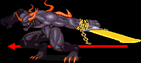
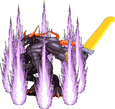

스테이지 10-5 보스 '다크 워리어 II' |
기본 정보
클리어 시간 측정의 시작 시점
플레이어가 움직일 수 있는 시점부터 최단 시간 클리어 기록
파이터 / 엘프 / 클레릭 4:49 |
|||||||||
| 점수 아이템 : | |
| 반지류 : | |
| 도구류 : | |
| 장비류 : | |
패턴은 거의 비슷하지만 스피드가 올라갔을 때의 위력은 공포스럽다. 초반보다 훨씬 빠르기 때문이다. 초반에 비해 장비도 좋아지고 LB오일도 있으니 공략법은 어렵지 않지만 LB오일을 실수했을 때의 후폭풍은 여타 보스와는 차원을 달리 할 것이다.
"너희 꼬맹이들을 다시 보니 반갑군."
"아주 인상깊어, 4천왕 중 둘이나 무찌르다니 말이야."
"헌데 이제는 좀 쉬는게 좋겠어......아주 영원히 말이다!!"
이후 다크 워리어 2가 등장하며 싸움이 시작된다.
클레릭/드워프는 파이터에 가까운 데미지를, 시프/엘프는 매직 유저에 가까운 데미지를 입는다.
| 속도 증가
일정 hp 수준이하로 떨어지면 모든 움직임의 속도가 거의 세배쯤은 빨라진다. 모든 공격에 거의 빈틈이 없어진다고 볼 수 있으며 그 때문에 LB오일로 초반에 끝내놓지 못하면 고수가 아닌 이상은 지옥을 경험하게 될 것이다.
|
|||||||||||||
| 텔레포트 | |||||||||||||
| 멀리 떨어져 있을 때 무작위로, 혹은 쓰러졌다가 일어날 때 쯤 텔레포트를 한다. 나타나는 장소는 기본적으로 무작위지만 쓰러졌다가 일어날 때 다크 워리어의 발치에 있으면 제자리에서 나타난다. 텔레포트 중에는 아이스 스톰, 컨주어 엘리멘탈, 클라우드 킬, 파이널 스트라이크를 제외한 그 어떤 공격으로도 hp피해를 입힐 수 없다. 만약 화면상에서 완전히 사라진 경우라면 클라우드 킬 만이 데미지를 입힐 수 있다. 또한 다크 워리어 1때와는 달리 컨티뉴얼 라이트로 전혀 봉쇄 할 수 없다. 다크 워리어 1에 비해 상당히 자주 텔레포트 하며 특히 스피드가 빨라진 상태에서는 정말 정신없이 텔레포트를 한다. |
|||||||||||||
| ※ 무적시간
모든 공격 시작 모션에 무적시간이 존재한다. 또한 가드 후에 카운터 공격이 발동하기 전 까지도 무적시간이 존재한다. 이 무적시간에는 아이스 스톰, 컨주어 엘리멘탈, 클라우드 킬을 제외한 그 어떤 공격으로도 데미지를 입힐 수 없다. 회피, 혹은 가드만이 살 길이다. |
|||||||||||||
| 베기 (29/42) | |||||||||||||
|
들고 있는 칼을 크게 휘두른다. 이 공격에 맞은 플레이어 캐릭터는 구석으로 처박힌다. 속도가 빠르기 때문에 보고 피하기는 힘들다. 또한 판정범위가 커서 어설프게 파고 들거나 그림자 치기를 하려다가는 큰코 다친다. 다크 워리어가 플레이어의 공격을 가드 한 후 거리가 가까우면 카운터 공격으로 이 공격을 할 수도 있다. |
|||||||||||||
| 전진 베기 (29/42) | |||||||||||||

모션은 근접공격과 같은데 앞으로 돌진을 한다.역시 속도가 빠르며 또한 이동거리도 길다. 판정이 다크 워리어1 보다도 더 넓기 때문에 그림자 치기 따위는 시도하지 않는게 좋다. 위 아래로 피하려다가 맞는 수가 있으니 가드를 하거나 시프나 매직 유저는 백스텝을 하는게 좋다. |
|||||||||||||
| 점프 찍기 (29/42) | |||||||||||||
| 점프해서 주먹으로 내려찍는 공격이다. 그러나 점프 하는 순간부터 착지 할 때까지 온몸에 판정이 있어서 괜히 접근하면 데미지를 입을 수 있다. 슬라이딩을 해서 뒤를 잡을수도 있지만 플레이어가 뒤에 있다면 바로 백점프를 해서 같은 공격을 할 수도 있으니 주의. 간혹 쓰러졌다가 일어날 때 텔레포트 대신 이 공격을 하는 경우도 있다. |
|||||||||||||
| 불기둥 (29/42) | |||||||||||||
| 땅을 내려쳐서 플레이어 캐릭터가 서 있는 지점에 불기둥을 생성시킨다. 내려친 후 바로 생성되는게 아니라 약간 시간이 걸리기 때문에 파하기는 어렵지 않다. 다만 때에 따라서 2~3번 이상 연달아 공격을 할 수도 있으며 내려찍는 주먹에도 공격판정이 있기 때문에 접근하다가 내려찍기에 데미지를 입을수도 있다. 불기둥이 꽤나 오래 남아있다는 점도 주의하도록 한다. 불 저항의 반지가 있다면 데미지를 입지 않는다. 홀리 실드에 걸치면 가드가 되지만 별 의미는 없다. |
|||||||||||||
| 불의 장벽 (29/42) | |||||||||||||
|  | 사방으로 불의 장벽을 친다. 준비 동작이 있어서 보고 피하는건 어렵지 않다. 다크 워리어 1의 전기 장벽과는 달리 장벽이 꽤 오래 지속된다. 태풍의 눈처럼 다크 워리어가 있는 중심부는 데미지 판정이 없어서 손만 빠르다면 안쪽으로 파고 들어서 공격하는 것도 가능하다. 불 저항의 반지가 있다면 데미지를 입지 않기 때문에 빈틈을 노릴 수 있는 기회이기도 하다. 그러나 빨라진 상태일 때는 이야기가 달라진다. 바로 뒤에서 공격해도 가드 하거나 장벽을 치자마자 텔레포트나 공격을 할 정도로 빈틈이 거의 사라지기 때문이다. 홀리 실드에 걸치면 가드가 되지만 별 의미는 없다. |
||||||||||||
| 암흑탄(?) (20/29) | |||||||||||||
| 가슴에서 입 같은것이 벌어지며 흐릿한 물질을 여러개 전방으로 발사 한다. 속도가 빠르지 않고 어느정도 날아가다가 사라지기 때문에 먼거리에서 있으면 닿지 않지만 가까이 있을 경우는 앉아서 피하는게 좋다. 거리가 가깝다면 넓게 퍼지면서 나가는데 대신 사정거리는 짧아진다. |
|||||||||||||
전체 화면 공격을 할 수 있는 아이스 스톰 같은 주문이나 이프리트의 항아리 같은 아이템으로 쓰러뜨려야 LB오일을 쓸 기회가 생길 것 이다.
쓰러졌거나 쓰러진 후 텔레포트를 하는 상황을 제외한 다크 워리어에게 2초내에 공격을 성공시키지 못하면 스켈레톤이 둘 소환된다. 그중 하나를 제거하면 또 다시 둘이 소환되며 이런식으로 총 16마리가 소환된다.
2인 플레이시
쓰러졌거나 쓰러진 후 텔레포트를 하는 상황을 제외한 다크 워리어에게 2초내에 공격을 성공시키지 못하면 스켈레톤 둘과 구울 하나가 소환된다. 그중 하나만 남게 되면 또 다시 스켈레톤 둘과 구울 하나가 소환되며 이런식으로 총 스켈레톤 16마리와 구울 8마리가 소환된다.
3~4인 플레이시
최초에 다크 워리어가 움직이는 동안 플레이어는 잠시 움직이지 못하므로 바로 스켈레톤과 구울이 소환되는데 각각 둘씩 소환된다. 화면상에 하나만 남게 되면 둘씩 다시 소환되며 총 16마리씩 소환된다.
| 다크 워리어 2는 게임상에서 몇 안되는 A공격이 상단공격으로 바뀌는 보스이다.
공격방식만 변하는게 아니라 특성도 일반 공격에서 필살기류로 바뀐다. - 콤보의 법칙 참조 다만 조금이라도 공중에 뜨면 일반 A공격이 나간다. 그리고 다크 워리어가 땅에 서 있는 상황에서 대쉬 공격을 시도하면 자동으로 상단공격이 나가버린다. 대쉬 공격으로 시작하는 콤보를 넣고자하면 조금이라도 공중에 뜬 상태에서 넣어야 한다. |
그외
쓰러졌을 때 스턴 상태가 됐을 경우(컨티뉴얼 라이트나 해머로 강제로 만드는 것은 제외) 다운공격을 하면 텔레포트를 하지 않고 바로 일어나서 공격을 한다. 또한 쓰러졌을 때 다운공격이 4번 성공하면 텔레포트를 하지 않고 역시 바로 일어나서 공격을 한다.
- 두말 할 필요 없이 LB오일이다. 빨라진 다크 워리어 2는 정말 무섭기 때문이다.
- 다만 LB오일 만으로는 데미지가 부족하기 때문에 데미지를 보충하기 위해서, 또한 가드를 워낙 잘해서 쓰러뜨리기 힘들기 때문에 가드를 푸는 의미에서 해머(매직 유저는 은단검)를 이용해서 데미지를 입히고 쓰러뜨린 다음 LB오일을 던지면 된다.
- 초반에 스피드 부츠가 없다면 대쉬로 접근하는게 좋다. 또한 될 수 있는 한 가깝게 붙는게 좋다. 엉성하게 붙으면 불 장벽 공격을 하면서 무적시간이 생겨버리기 때문에 스켈레톤이 나오는 수가 있다.
특히 해머 투척 속도가 느린 드워프나 엘프는 점프공격을 맞을 수도 있다.
- LB오일을 맞으면서 빨라지는 시점이 되면 무조건 일어나기 때문에 마구 던지다보면 빗나가는 LB오일이 생기기 마련이다. 그래서 클래스에 따라서 5~7개를 던지고 일어났다 다시 쓰러졌을 때 다시 나머지를 던져야 한다.
- 쉽게 정리하면 해머(매직 유저는 은단검) → 콤보 → LB오일 5~7개 투척 → 다크 워리어가 다시 쓰러지는 모습 확인 후 나머지 LB오일을 하면 된다. 실전에서는 클래스에 따라 전략이 약간씩 다르니 클래스 별 공략에서 좀 더 자세히 확인하도록 하자.
◎ LB오일의 데미지
- 홀수번 째 LB오일은 일반 데미지의 4배를 입히며 짝수번 째 LB오일은 3배를 입힌다. 파이어 로드가 있다면 홀수번째는 84(21x4) / 짝수번째는 63(21x3)의 데미지가 나오며 파이어 로드가 없다면 각각 64(16x4) / 48(16x3)의 데미지가 나온다.
- 반면 빨라진 상태라면 홀수/짝수에 상관없이 6배의 데미지를 입힌다. 파이어 로드가 있다면 각각 126(21x6) / 96(16x6)의 데미지가 나온다.
- 파이어 로드가 없다면 해머 9개 + 콤보 1~2번 + LB오일9개로 얼추 데미지가 맞는다. 파이어 로드가 있다면 해머를 더 적게 던져도 된다.
◎ 파이어 로드와 불 저항의 반지의 선택
- 이전에 나오는 두번째 숨겨진 방에서 파이어 로드를 얻을 수 있고 세번째 방에서 불 저항의 반지를 얻을 수 있다. 파이어 로드가 있다면 다크 워리어 2를 좀 더 빠르고 쉽게 잡을 수 있고 이후의 synn을 LB오일로 더 쉽게 잡을 수 있다. 반면 불 저항의 반지의 경우 다크 워리어 2의 불 공격과 synn의 불 공격에 대해 안전하다. 플레이어가 적절히 선택하기 바란다.